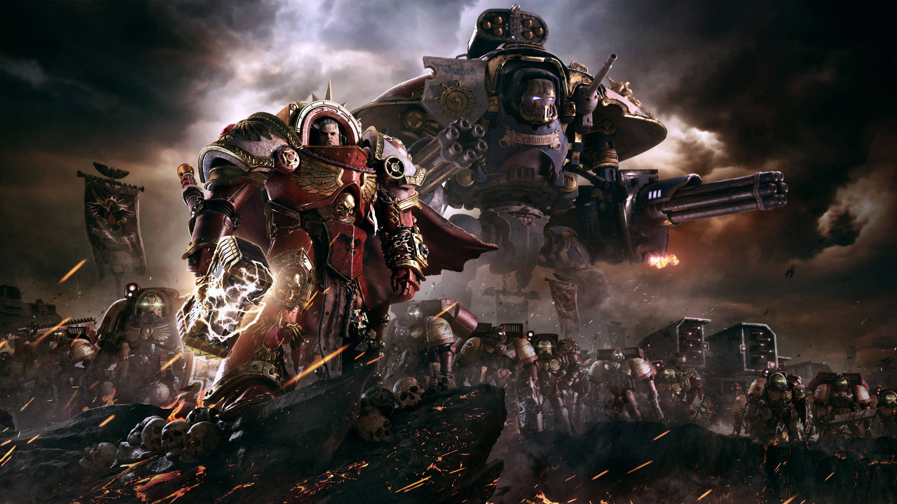

What is Warhammer 40K?

It is the 41st Millennium. For more than a hundred centuries The Emperor has sat immobile on the Golden Throne of Earth. He is the Master of Mankind by the will of the gods, and master of a million worlds by the might of his inexhaustible armies. He is a rotting carcass writhing invisibly with power from the Dark Age of Technology. He is the Carrion Lord of the Imperium for whom a thousand souls are sacrificed every day, so that he may never truly die. To be a man in such times is to be one amongst untold billions. It is to live in the cruelest and most bloody regime imaginable. These are the tales of those times. Forget the power of technology and science, for so much has been forgotten, never to be re-learned. Forget the promise of progress and understanding, for in the grim darkness of the far future there is only war. There is no peace amongst the stars, only an eternity of carnage and slaughter, and the laughter of thirsting gods.
Warhammer 40K is an expansive grim-dark sci-fi setting set in the 41st millenium, and loved by many for its lore, characters, or even the tabletop game that millions around the world enjoy. If you are someone who is intrigued by this universe, the guide before you hopefully will aid you in introducing you to the universe many love. To start, a brief overview of this guide should be given and a few words of guidance when going through this guide shared. This guide is created for the sole purpose of giving a general overview of the Warhammer universe, sharing the various factions that it holds, mainly those that can be played in the tabletop, and share some of the various, beautiful models the game holds. It is advised to start at this here home page for two reasons: 1. To give some background to the universe itself and lay a foundation for it, and 2. given cntext to the overarching lore for the varying factions. Not everything will be explained and groups that don't have a presence in the tabletop will not be mentioned here. Upon going through the home page, the three pages found within this guide can be perused in any order, start where you wish. I recommend to start with what you find most intriguing and go from there.
Overview
The world of warhammer 40k is filled with many varying groups, from the human empire called the Imperium of MAn, to aliens that scour the galaxy, to horrific daemons that seek to feed on the souls of the living. The galaxy is ablaze with conflict from humanity fighting for suvival to others simply fighting to expand their territories. To understand the Warhammer universe a few key things should be known.
In the world of warhammer there is the Materium, the physical realm that most all factions reside in, and the Immaterium or the Warp, a hell-like dimension many use to travel from star system to star system. All dreams, thoughts, feelings, and souls go to the warp, and some are able to harness some of the Warps power. These people are called Psykers, space wizards one could say that can cast magical power with their minds. It should also be known that NO ONE is the good guy, every single faction, even humans, are some shade of evil but thats where the charm of this universe comes in. Despite are dark, dreary, and horrific this universe can be, VILLIANS ARE COOL! They look awesome, and playing as the villian is a blast! This is one of the many charms of this universe that we as a fanbase love, though there are a few other aspects that people truly love about this universe beyond this.
Tabletop Info
If you are considering getting into the tabletop I hope to give some advice and info on the matter. Firstly, before purchasing anything, find a group or some buddies you know who play and play a game or two. You want to see if you actually want to play the game, and if you don't enjoy it thats okay. If you do enjoy the game and are not sure where to start, read the brief overviews of each faction, and choose which one you like the most. Then all you need is one of the starting kits ofr that army, plastic glue, superglue, some small clippers, a razorblade, and you are all set. I recommend looking up a video on how to biuld the miniatures as it gives some good advice during the biulding process. My final tip is dry biulding, where you put two pieces together before gluing, this helps you know how the pieces fit so you can glue them without issue.